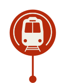
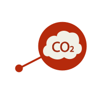
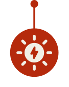
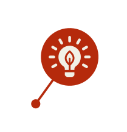
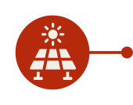

3 milhões
de passageiros transportados todos os dias
Quanto mais pessoas optarem pelo transporte público, menor serão as emissões de gases do efeito estufa
polui 30x mais que o

O metrô é um modal elétrico e, em Salvador e Lauro de Freitas (BA),
poupou emissões equivalentes a 23.564 carros e evitou a emissão de 45 mil toneladas de CO2 em 8 anos

Nas estradas, a energia solar abastece a iluminação de rodovias, operação de praças de pedágio e o funcionamento das câmeras de monitoramento
5,8 mil já evitaram a emissão de 900 toneladas de CO2

Até
2025
a energia usada nas rodovias, aeroportos, trens, metrôs, VLTs e barcas do Grupo CCR, virá de fontes renováveis

Até
2026
o aumento das usinas solares nas rodovias e na Linha 5 (Lilás), do metrô de São Paulo, vai evitar 1 mil toneladas de emissões de CO2
Veja os números
sobre mobilidade sustentável